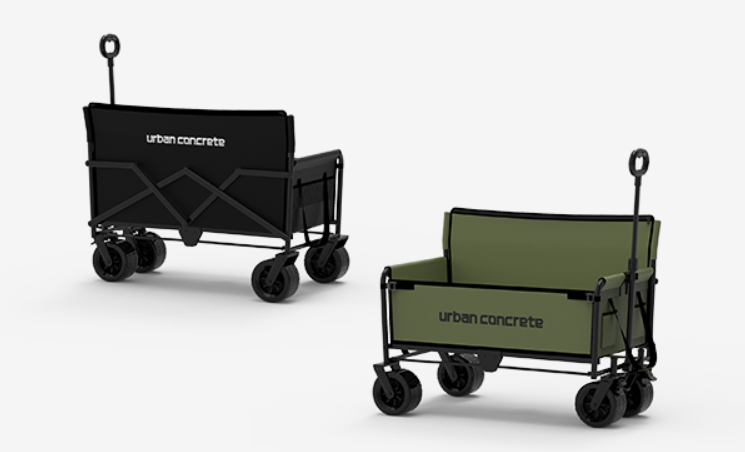
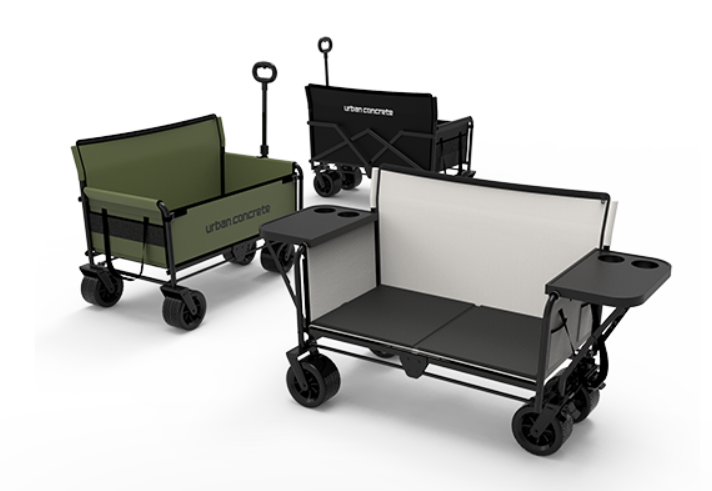
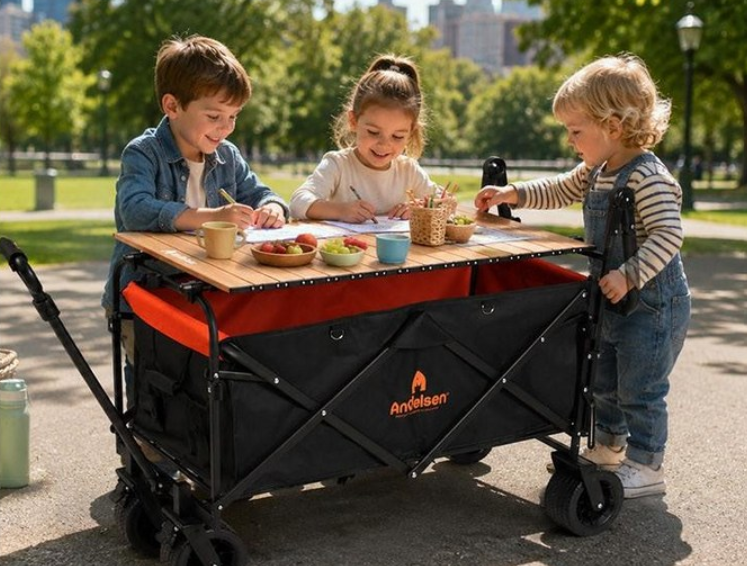
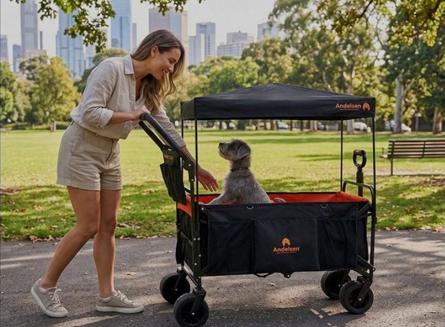
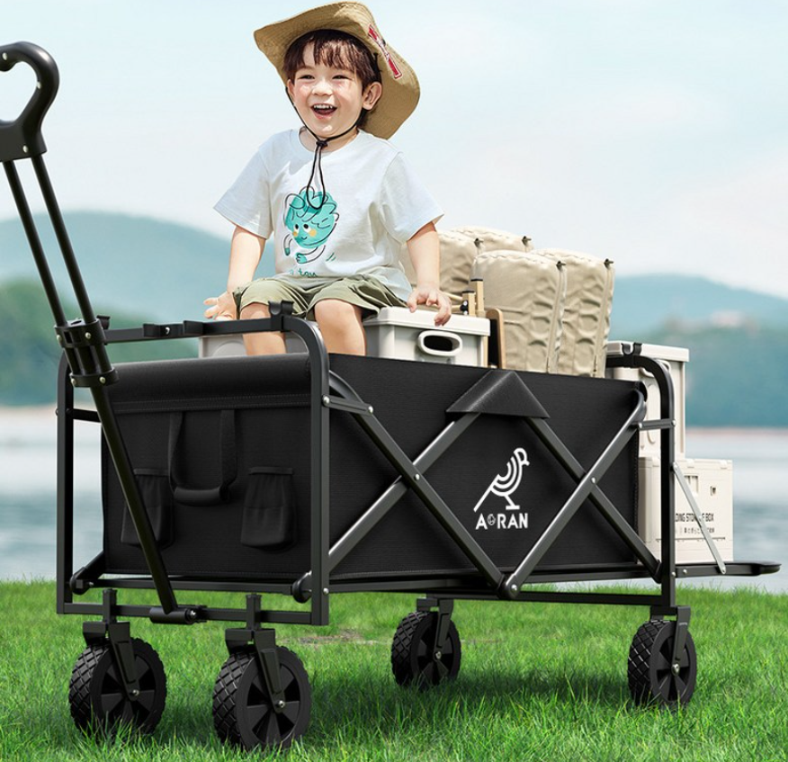
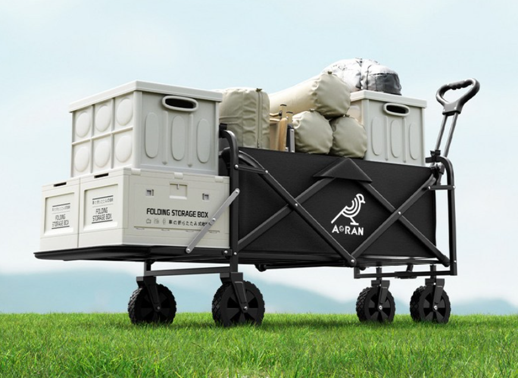

공원이나 캠핑장에 갈 때 가장 곤란한 건 짐의 양이에요. 돗자리, 그늘막, 테이블, 의자, 기저귀 가방까지 챙기면 손이 모자라죠. 접이식 웨건 하나면 무거운 짐을 한번에 끌고 다닐 수 있고, 아이를 태울 수도 있어서 야외 나들이 필수템으로 꼽혀요.
이번 4편에서는 어반콘크리트 벤치겸용 웨건, 안델센 웨건, 아오란 웨건 3종을 비교해서 소개해 드릴게요.


웨건 본체를 펼치면 벤치 형태로 변신하는 독특한 구조예요. 짐을 옮기다가 그 자리에서 바로 부모가 앉을 의자로 활용할 수 있어 별도 의자를 챙기지 않아도 돼요. 음료 거치대가 달린 트레이까지 있어서 캠핑장이나 공원에서 다용도로 쓰기 좋아요. 블랙·카키 컬러로 어디서나 무난하게 어울려요.


안정적인 프레임과 넉넉한 적재 공간이 특징인 클래식 스타일 웨건이에요. 짐을 많이 싣고 다니는 가족 단위 나들이에 적합하고, 튼튼한 바퀴 덕분에 모래사장이나 잔디밭에서도 안정적으로 끌 수 있어요. 접으면 부피가 작아져서 차 트렁크에 보관하기도 편해요.


넓은 적재함과 견고한 마감이 특징인 대용량 웨건이에요. 캠핑 장비, 아이스박스, 돗자리까지 한번에 실을 수 있을 만큼 공간이 넉넉해서 캠핑이나 장시간 나들이에 특히 유용해요. 측면 커버가 있어 짐이 쏟아지지 않게 잘 잡아주고, 접었을 때도 비교적 슬림한 편이에요.
| 제품 | 특징 | 추천 상황 |
|---|---|---|
| 어반콘크리트 | 벤치 겸용, 음료 트레이 | 의자 따로 안 챙기고 싶을 때 |
| 안델센 | 안정적인 프레임, 넉넉한 적재 | 가족 단위 짐 많은 나들이 |
| 아오란 | 대용량 적재함, 측면 커버 | 캠핑 장비까지 함께 옮길 때 |
단거리 이동이나 공원·캠핑장처럼 평탄한 곳에서는 유모차 대신 사용해도 괜찮아요. 다만 웨건은 안전벨트나 충격 보호 기능이 유모차보다 약한 경우가 많아서, 차도나 복잡한 인도에서는 유모차가 더 안전해요.
웨건 본체를 펼치면 부모가 앉을 수 있는 벤치 형태로 변형돼요. 짐을 옮기다가 그 자리에서 의자로 바로 활용할 수 있어 별도 의자를 챙기지 않아도 되는 장점이 있어요.
적재 하중, 접이식 부피, 바퀴 내구성을 꼭 확인하세요. 아이를 태우려면 안전벨트나 좌석 고정 기능이 있는지도 살펴봐야 해요. 차 트렁크에 들어가는 접힌 크기도 중요한 선택 기준이에요.
이 포스팅은 쿠팡 파트너스 활동의 일환으로, 이에 따른 일정액의 수수료를 제공받습니다.